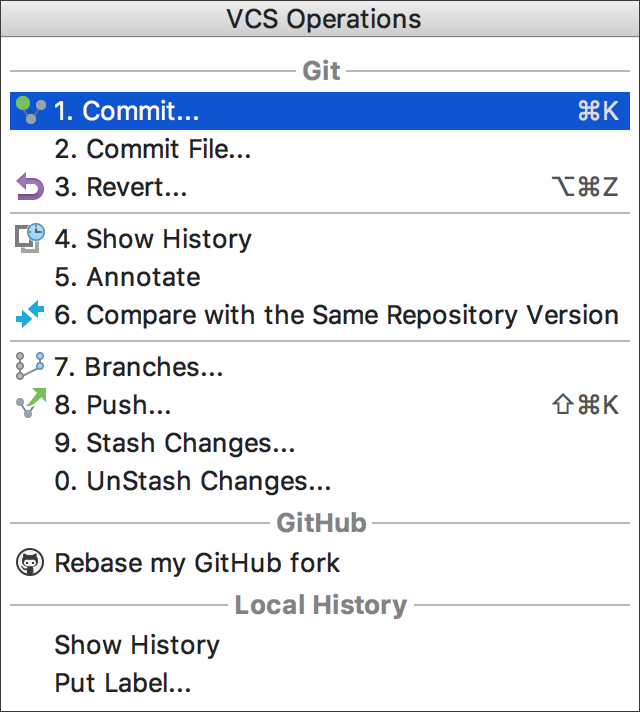
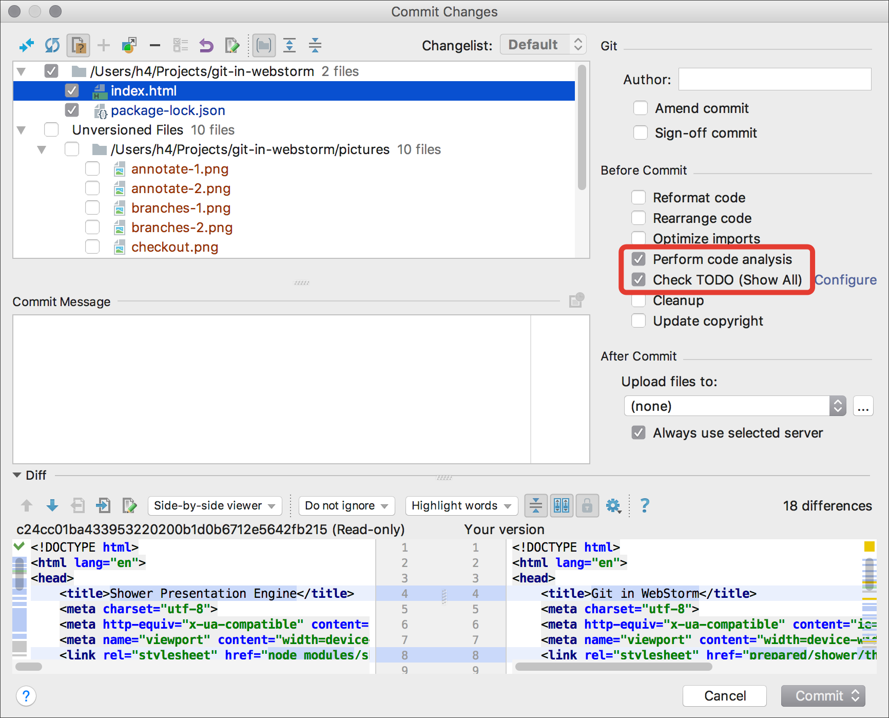
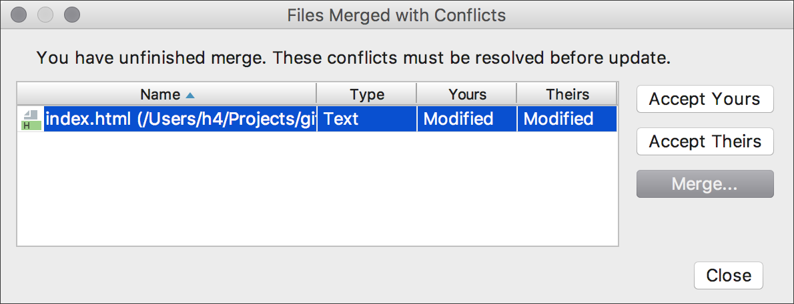

Git in WebStorm
Git in WebStorm
Миша Баранов, pitercss__18
Почему не консоль/Github Desktop?
Нет переключения контекста
Быстрее
Intelligence
Ctrl + V | Alt + BackQuote

Cmd + K | Ctrl + K

Cmd + D
Cmd + Shift + K | Ctrl + Shift + K
Cmd + T | Ctrl + T

Cmd + 9 | Ctrl + 9
Three-heads development
Working Tree
Origin
Upstream
Three-heads development
Fetch
Merge with upsteam/master
Push to origin
Кто это понаписал?
Спасибо!
Миша Баранов
mkhl.brnv.ru
mkhl@brnv.ru
github.com/h4